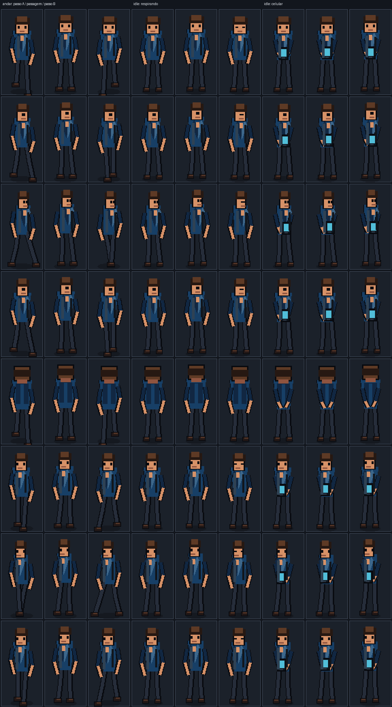
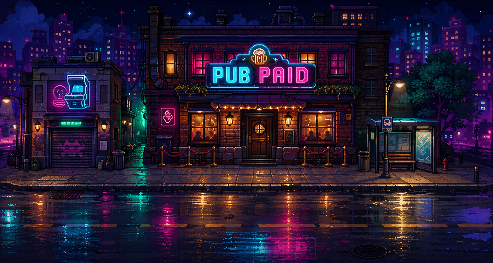
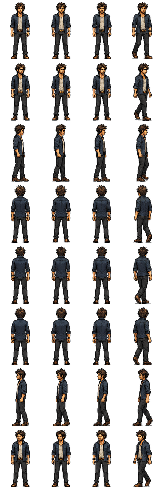
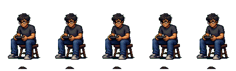
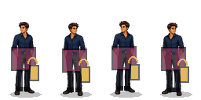
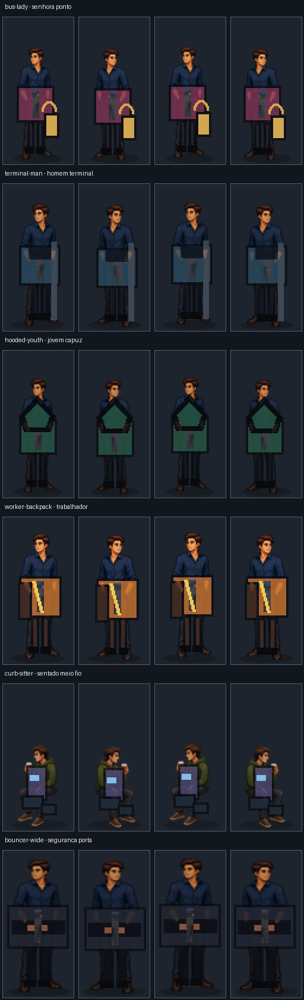
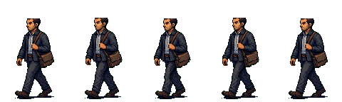
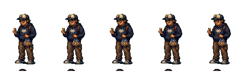
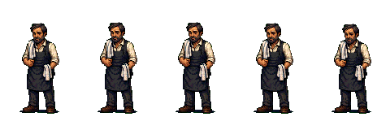
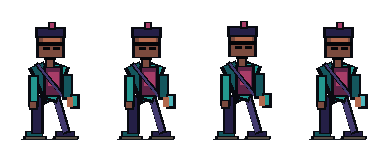

Protagonista

referencia de escala
Usar para baseline, proporcao e leitura de corpo. Novos pedestres precisam casar com esta escala e com o fundo.
Pagina simples para aprovar personagens antes de qualquer integracao no runtime. Nao usa Canvas, JavaScript, animacao procedural nem troca assets do jogo.
nenhum personagem novo aprovado
A arte atual foi organizada como referencia, candidato ou divida. O proximo passo e criar um pack novo de pedestres a partir do prompt master em PUBPAID_V2_NPC_PIXEL_ART_MASTER_PROMPT.md e do protocolo em PUBPAID_2_CHARACTER_ART_PROMPT.md.





Usar para baseline, proporcao e leitura de corpo. Novos pedestres precisam casar com esta escala e com o fundo.

Corpo e paleta ajudam como estudo, mas varios props parecem placas coladas. Refazer acessorios dentro da silhueta.

A ideia de caminhada ainda fica como estudo. A proxima versao precisa provar 5 ciclos diferentes, pernas alternadas, peso e bracos com leitura humana.

Tem tema certo para o mundo, mas o corpo precisa perder leitura de bloco/prop solto antes de virar final.

Bom tipo de figurante para bar, mas precisa ser comparado contra o interior real antes de aprovacao.

Ficam como memoria de comparacao. A leitura ainda parece simples/chapada demais para o padrao pedido.